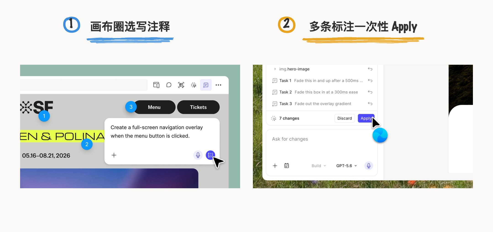
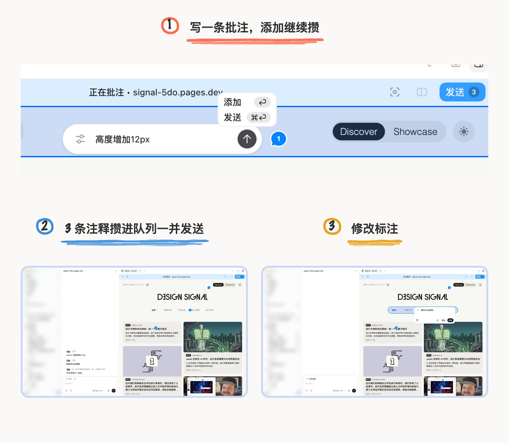

Figma Make 是 AI 时代早期加入 AI 提示词生成 UI 的设计工具，但后续进度有点慢了，那些在 Design 模式下的工具面板、AutoLayout 这些可视化的便捷操作，始终没有并入到 AI coding 中，一种 UI 元素是极其僵硬的原始感觉，怎么还没进化的期待感。相对来说 Cursor 早早支持的 Design Mode 属性面板可以详细编辑调整视觉样式，在设计工具这一条线是走得更快的，Figma 作为前沿设计软件居然没有这种交互。
大部分 design Agent 工具一直在解决 Prompt 做不到指哪改哪的精确控制问题，是因为这类工具的用户画像是 UI 设计师、UX 设计师、Motion 设计师群体本身都是细节控，都有精确到像素点的习惯，自然就希望每个元素都必须能自己掌控。
这次，Figma Make 终于赶上来了。7 月 30 日 Figma 更新了Make 编辑器 ，把 Design 里那个面板加进来了，同时还有 AutoLayout、点哪改哪的 Agent，同时增加了节省试错成本的暂存机制。
先精准编辑再提交的掌控感
•延续 Design 模式下的调参习惯，直接给 Make 加上精确的操作目标，省掉了文字 prompt 需要的搜索和猜测。具体操作是右上角工具栏点 "Edit"，右侧弹出面板上都是常见参数操作方式和 Figma Design 里基本一样，所有元素都手动编辑。

•画布上也支持手搓 AutoLayout 了。这是我最惊呼的一个功能！AI 时代怎么能抛弃手搓手艺呢？ 比如选中一个 nav 容器，Position 直接给到 Auto，排布方向、间距、padding 逐项可调，宽高能选 Fill 或 Hug，往下还有 Typography 和 Background 这些分组，字体、字号、行距、透明度都是 Design 里熟悉的那套控件。

编辑模式下随便拖、随便调都行，每一条编辑先暂存到 prompt box 里，可以逐条过一遍，不想要的随手丢掉，确认了再点 Apply，Make 才把改动写进底层代码，文件更新到一个新版本；积分在 Apply 这一步才扣，暂存状态完全不花钱。
Figma 官方之前提到用户社区在讨论 "tokenmaxxing"，怎么用最少的积分干最多的事，还专门出了 7 条省积分的实践，大家是真的在心疼积分。像调间距、调字号、调布局这种高频行为，在 AI coding 工具中每一次尝试都是实打实的 token 消耗，所以 Make 这种灵活精细调整和暂存机制，省的是试错的钱。
把标注和对象绑定的安全感
•还有一个新功能是多个标注、同时发送功能。在工具栏选 "Annotate for agent"，直接在画布上选择区域 prompt 式交互，比如 "hover 时缩略图微微放大、松手恢复，动效采用 ease out"。交互不是现在大部分 coding Agent 的交互：browser 内选中元素 → 自动带入 Chatbox → 再输 prompt，Make 是 prompt 跟随点击区域、而且可以多个标注并存在画布上，其实是更清晰的行为痕迹，而且优势在于可以一次性输入多个标注，一并发给 Agent。

这个标注做法和新版 Codex 有点类似，都是多标注、多条一起发送的交互。差异在于 Agent 输入框上的展示是不一样的，Codex 是展示在 Chatbox 内的，默认是一个 tag，hover 才展开全部列表的一个 tooltip；而 Figma 是直接列表展示于 Chatbox 上方。

Figma 过去几周在 Make 编辑器上一版接一版地补能力，之前加了 code layers，这次是属性面板和注释，Code Connect 也排在后面，正在一块一块把传统设计工具的能力搬进 AI 编辑器。但旧文件不支持新功能，想用新功能就得从新文件开始，这个迁移成本 Figma 还没给解法。
本文功能说明与 Figma Make 界面截图来自 Figma 官方博客 A Properties Panel and Annotations, Now in Figma Make；Codex 批注截图为本人实测；其余配图为本人手绘信息图。